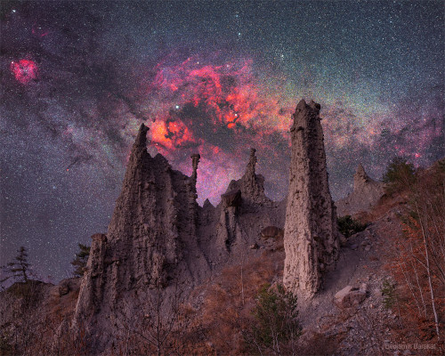

Real castles aren't this old. And the background galaxy is even older. Looking a bit like an alien castle, the pictured rock spires are called hoodoos and are likely millions of years old. Rare, but found around the world, hoodoos form when dense rocks slow the erosion of softer rock underneath. The pictured hoodoos survive in the French Alps and are named Demoiselles Coiffées -- which translates to English as "Ladies with Hairdos". The background galaxy is part of the central disk of our own Milky Way galaxy and contains stars that are typically billions of years old. The photogenic Cygnus sky region -- rich in dusty dark clouds and red glowing nebulas -- appears just above and behind the hoodoos. The featured image was taken in two stages: the foreground was captured during the evening blue hour, while the background was acquired from the same location later that night.
In 185 AD, Chinese astronomers recorded the appearance of a new star in the Nanmen asterism. That part of the sky is identified with Alpha and Beta Centauri on modern star charts. The new star was visible for months and is thought to be the earliest recorded supernova. This deep image shows emission nebula RCW 86, understood to be the remnant of that stellar explosion. The narrowband data trace gas ionized by the still expanding shock wave. Space-based images indicate an abundance of the element iron and lack of a neutron star or pulsar in the remnant, suggesting that the original supernova was Type Ia. Unlike the core collapse supernova explosion of a massive star, a Type Ia supernova is a thermonuclear detonation on a a white dwarf star that accretes material from a companion in a binary star system. Near the plane of our Milky Way galaxy and larger than a full moon on the sky this supernova remnant is too faint to be seen by eye though. RCW 86 is some 8,000 light-years distant and around 100 light-years across.
The James Webb Space Telescope is a space telescope launched by NASA on December 25, 2021. Its high-resolution and high-sensitivity instruments allow it to view objects too old, distant, or faint for the Hubble Space Telescope